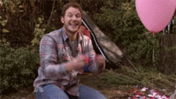

New Blog Design!
JANUARY 9, 2015
This is the first website I've ever created. EVER! So I'd say the whole experience of creating this site has taught me a lot. I really couldn't be more stoked about it. I didn't change a ton about it for this redesign. Overall, the layout is pretty much the same, but I added the header and updated the nav bar. I also switched out my fonts for one consistent font. (Shout out to Rosa Pergams for inspiring me with her badass blog!<3)
Mostly this site is a visual representation of how much I've learned these past 9 weeks - Ruby, HTML, CSS, JavaScript, SQL, and a little bit of jQuery. I had no idea I would be learning so much in such a short period of time.
On Monday, I start the on site program. I'm super nervous and really excited. I can only imagine how much I'll learn once I'm learning full-time.
For now, I'd say it's safe to celebrate a little. GUYZ, I MADE A WEBSITE!!!! WOOHOO!
